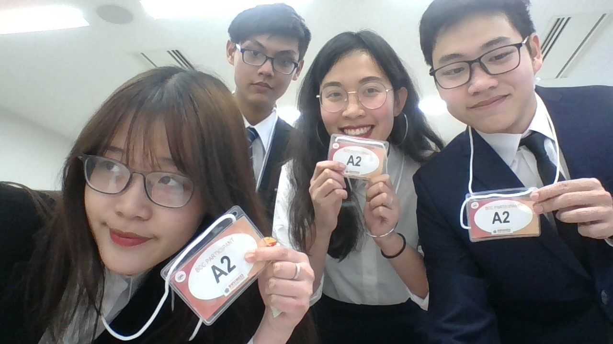

DAM Le Thanh Tung - 12418143
My name is Dam Le Thanh Tung. I am an Accounting and Finance student currently studying in APU. I am quite a reserved person and I always have trouble making friends when entering a new environment. Coming to APU was indeed a novel experience for me as I have never been surrounded by these many foreign students, let alone to have them coming from many different countries. Luckily I have made many friends both from the international student body and my own country as well.
Business Case Challenge
 In my first year, I joined the Business Case Challege with a group of friends who are all first year students. The competition requires each team to devise a business plan as the solution for the case in 21 hours. As we lacked experience and knowledge about the competition, we got eliminated on the first round. However, it was a great experience for all of us and we had a great time working together.
Teaching Assistant
 I got selected to be a Teaching Assistant for Professor Lanka's Programming course. It has always been my dream to work with programming. The job has given me invaluable experience as both a Teaching Assistant and a programmer. Through helping students to fix their projects, I learned a lot about the many ways a simple task can be done in programming.
I got selected to be a Teaching Assistant for Professor Lanka's Programming course. It has always been my dream to work with programming. The job has given me invaluable experience as both a Teaching Assistant and a programmer. Through helping students to fix their projects, I learned a lot about the many ways a simple task can be done in programming.